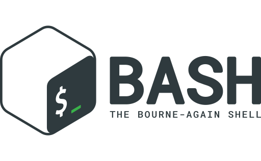

Informations Personelles
- GACI Hanafi
- hanafi.gaci@laplateforme.io
- 0784855575
- 5 boulevard alphonse moutte 13013
- permis B
Expérience professionnelle
-
Septembre 2022- Janvier 2023 Vendeur magasinier, Apa Piece automobile
-
Mai 2021 - Aout 2021 Livreur sushi, sushimyory
-
Septembre 2020 - Janvier 2021 Agent de courrier la Poste
-
Juillet – Septembre 2020 Manutentionnaire a Factorius interim
-
Septembre – novembre 2019 Plombier azur confort
-
Fevrier – Juillet 2019 caissier livrreur Planet sushi
-
Janvier 2019 Preparateur de commandes à adéquatinterim
Formation
-
2017
Niveau terminale STMG / Lycée st charles
-
2014
Brevet des collèges / [Collège Pierre Puget]
Objectif personnel
- mon objectif professionel est de devenir un professionnel de linformatique polyvalant et competent, capable de resoudre des probleme complexe, de concevoir des solution informatique ionovante et dameliorer mon train de vie .
Mes compétences
-

bash
-

Linux
Mon CV
Voici mon CV au format PDF :
Télécharger le CV (PDF)